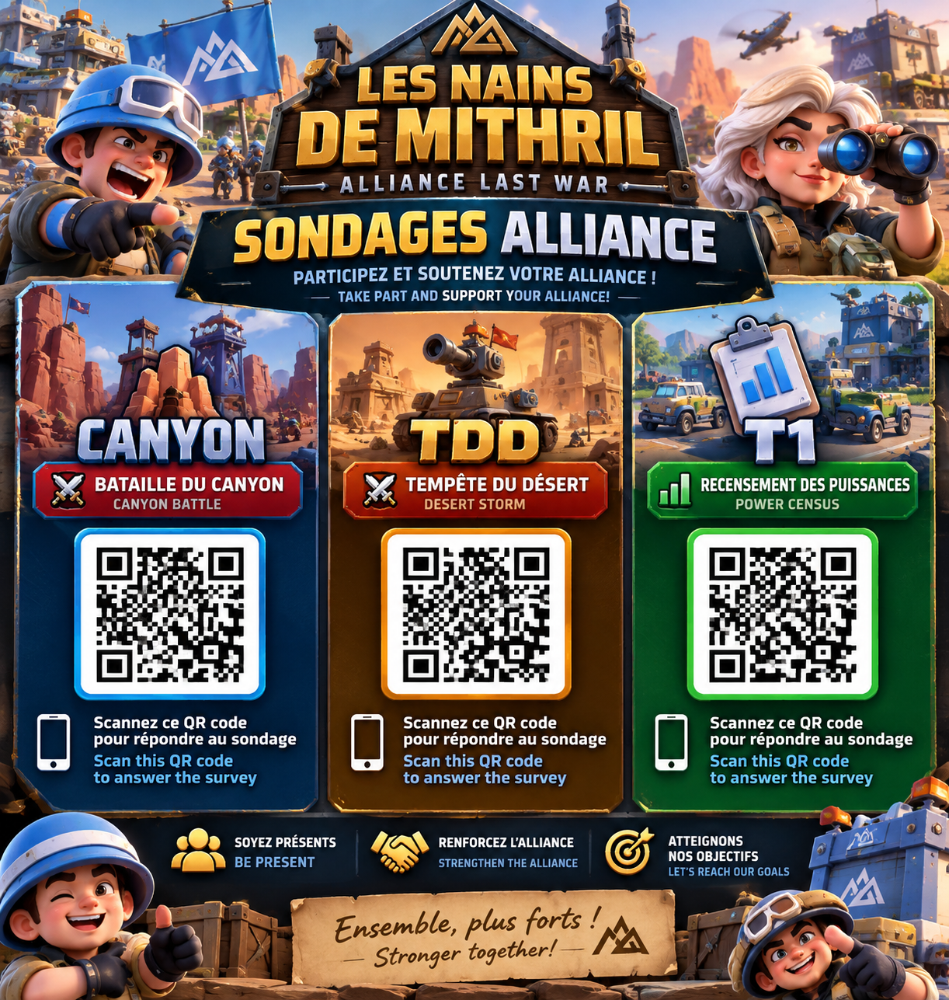

CANYON
Bataille du Canyon — confirmez votre disponibilité.
PARTICIPERQuartier général — Sondages de l’alliance
Choisissez votre mission et participez au sondage !
Bataille du Canyon — confirmez votre disponibilité.
PARTICIPERTempête du désert — confirmez votre disponibilité.
PARTICIPERPuissance T1 — transmettez votre puissance.
PARTICIPERVous souhaitez conserver l’ancienne affiche avec QR codes ?
⬇ Télécharger l’affiche QR